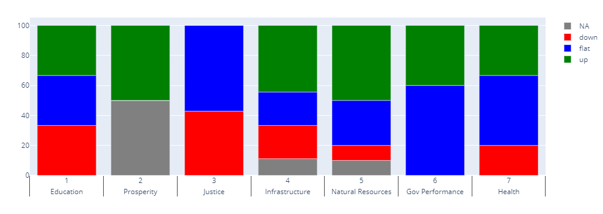

___________________
___________________
| Indicator Name | Policy Area | Goal | Goal # | Type | Updated | Comp | Year | Value | Rank | Peer Rank | Previous Year | Previous Value | Previous Rank | Previous Peer Rank | Metric Trend | Target | Baseline | Target Value | Previous Trend |
|---|---|---|---|---|---|---|---|---|---|---|---|---|---|---|---|---|---|---|---|
| Postsecondary completion | education | Postsecondary | 5 | Primary | yes | States | 2020 | 0.55 | 32 | 11 | 2019 | 0.537 | 11 | 11 | flat | 32% | 80% | flat | |
| 4rd grade reading | education | Early childhood | 3 | Primary | yes | States | 2019 | 30 | 44 | 12 | 2017 | 29% | 45 | 12 | up | Top 3 | 30% | 38% | Flat |
| Living wages | education | Jobs | 6 | Primary | yes | States | 2018 | 44% | 37 | N/A | 2016 | 42% | N/A | down | Top 3 | 58% | 60% | Flat | |
| Business tax burden | government | Broad stable revenue base | 31 | Primary | yes | States | 2021 | 5.46 | 40 | 10 | 2020 | 5.5 | 10 | 10 | flat | Top 6 | N/A | Worsening | |
| Individual tax burden | government | Broad stable revenue base | 31 | Primary | yes | States | 2021 | 7.88 | 45 | 11 | 2020 | 7.9 | 11 | 11 | flat | Top 3 | N/A | Worsening | |
| Confidence | government | Confidence in government | 29 | Primary | no | States | 2018-2019 | 43% | 19 | 2 | Top 9 | 35% | flat | ||||||
| User satisfaction | government | Customer service | 35 | Primary | no | States | |||||||||||||
| Voter participation | government | Civic engagement | 30 | Primary | yes | States | 2020 | 48.4 | 46 | 12 | 2019 | 48.4 | 12 | 12 | up | Top 9 | 48.4 | 53% | Improving |
| Fiscal Sustainability | government | Broad stable revenue base | 31 | Primary | no | States | 2019 | 22 | 5 | Top 3 | Flat | ||||||||
| Taxpayer ROI | government | Wisely managed state spending | 32 | Primary | no | States | 2020 | 7 | 4 | ||||||||||
| results through teamwork | government | Aligned accountability | 36 | Primary | no | Texas | |||||||||||||
| Long-Term Liabilities | government | Wisely managed state spending | 32 | Primary | yes | States | 2020 | 1.192 | 8 | 3 | 2019 | 1.161 | 8 | 3 | flat | Top 3 | 7.10% | 5.20% | Improving |
| transformation progress | government | Proven modern methods in data and analytics IT HR and procurement | 34 | Primary | no | Texas | |||||||||||||
| Retention | government | Talent in government | 33 | Primary | yes | Texas | 2020 | 18.6% | N/A | 2019 | 20.3% | N/A | up | ||||||
| Health care expenditure growth | health | Value-driven system | 12 | Primary | yes | States | 2020 | 20.41 | 12 | 5 | 2019 | 17.16 | 5 | 4 | flat | Top 3 | 5.1 | 3.5% | Improving |
| Life expectancy | health | Public health | 11 | Primary | yes | States | 2018 | 79.2 | 25 | 8 | 2010 | 78.4 | 8 | 9 | up | Top 3 | 78.5 | 80.5 | Flat |
| Obesity | health | Public health | 11 | Primary | yes | States | 2020 | 34 | 33 | 11 | 2019 | 34.8 | 11 | 12 | down | Top 6 | 35% (adults); 32% (children) | 31% | Worsening (adults); Improving (children) |
| Persons with usual primary care provider | health | Availability of health care | 8 | Primary | yes | States | 2020 | 68.1 | 48 | 12 | 2019 | 68.2 | 12 | 12 | flat | Top 3 | 68% | 80% | Flat |
| Texans unable to get care due to medical cost | health | Affordability of health care | 9 | Primary | yes | States | 2020 | 18.8 | 51 | 12 | 2019 | 16.8 | 12 | 11 | down | Top 3 | 17% | 11% | Improving |
| Tobacco use | health | Public health | 11 | Primary | yes | States | 2020 | 14.7 | 17 | 7 | 2019 | 14.4 | 7 | 4 | down | Top 6 | 14% | 15% | Flat |
| Immunizations | health | Value-driven system | 12 | Primary | yes | States | 2020 | 72.1 | 43 | 11 | 2019 | 75.7 | 11 | 7 | flat | ||||
| Low birthweight | health | Public health | 11 | Primary | yes | States | 2020 | 8.5 | 29 | 6 | 2019 | 8.4 | 6 | 5 | flat | Top 3 | 8.4% | 8.1% | Worsening |
| Incidence of chronic disease | health | Public health | 11 | Primary | yes | States | 2020 | 8.1% | 9 | 2019 | 9.6% | N/A | up | ||||||
| Uninsured rate | health | Affordability of health care | 9 | Primary | yes | States | 2020 | 0.18 | 49 | 12 | 2019 | 0.175 | 12 | 12 | flat | Top 3 | 18% | 6.4% | Mixed |
| Preventable hospital admissions | health | Value-driven system | 12 | Primary | yes | States | 2020 | 4656 | 32 | 8 | 2019 | 53.2 | 8 | 9 | up | Top 3 | 7.2 | 5.9 | Mixed |
| Mortality amenable to health care | health | Public health | 11 | Primary | yes | States | 2020 | 7126 | 20 | 6 | 2019 | 7,240 | 22 | 10 | flat | Top 3 | 95 | 71 | Flat |
| Availability of mental health care providers | health | Availability of health care | 8 | Primary | yes | States | 2020 | 123.7 | 1 | 1 | 2019 | 111.8 | 1 | 1 | flat | Top 3 | 960:1 | 310:1 | Flat |
| Availability of physical health care providers | health | Availability of health care | 8 | Primary | yes | States | 2020 | 191.7 | 3 | 2 | 2019 | 182.6 | 2 | 2 | up | Top 3 | 1,660:1 | 1,230:1 | Flat |
| Adult Vaccinations | health | Public health | 11 | Primary | yes | States | 2020 | 40 | 40 | 9 | 2019 | 26.4 | 9 | 12 | up | Top 6 | 43% | 48% | Mixed |
| Cost of congestion | infrastructure | Mobility of individuals | 13 | Primary | yes | Metros | 2020 | $1,097 | 2019 | $1,635 | up | 922 | 981 | 922 | Worsening | ||||
| Electricity prices | infrastructure | Energy distribution | 17 | Primary | yes | States | 2019 | 8.6 | 8 | 2 | 2018 | 8.48 | 2 | 2 | down | Top 6 | 8.5 | 9.6 | Mixed |
| Emergency preparedness | infrastructure | Hazard readiness | 18 | Primary | yes | States | 2019 | 6.7 | 13 | 2018 | 6.6 | 19 | 9 | up | Top 6 | 6.5 | 6.7 | Improving | |
| Traffic fatality rate | infrastructure | Safety | 15 | Primary | yes | States | 2019 | 1.25 | 34 | 11 | 2017 | 1.29 | 34 | 11 | flat | Top 9 | 1.29 | 1.17 | Improving |
| Electricity sufficiency | infrastructure | Energy distribution | 17 | Primary | yes | Texas | 2020 | -3.02% | N/A | 2019 | -.04% | down | |||||||
| Broadband subscription | infrastructure | Digital connectivity | 16 | Primary | yes | States | 2019 | 0.862637487 | 23 | 6 | 2018 | 0.845139408 | 6 | 8 | up | Top 6 | 66% | 71% | Improving |
| Broadband coverage | infrastructure | Digital connectivity | 16 | Primary | yes | States | 2020 | 86.7 | 37 | 12 | 2019 | 85.7 | 12 | 9 | up | ||||
| Commute choice | infrastructure | Mobility of individuals | 13 | Primary | yes | States | 2020 | 80.1 | 22 | 3 | 2019 | 80.7 | 3 | 2 | flat | Top 6 | 18% | 23% | Flat |
| Total freight movement | infrastructure | Mobility of goods | 14 | Primary | no | States | 2020 | N/A | N/A | N/A | 2019 | N/A | N/A | 1 | N/A | Rank 1 | 1.2 | 1.2 | Improving |
| Property crime rate | justice | Public safety | 25 | Primary | yes | Texas | 2019 | 2,391 | 15 | 2018 | 2,363.2 | N/A | 7 | flat | Top 9 | 2370 | 2464 | Improving | |
| Violent crime rate | justice | Public safety | 25 | Primary | yes | States | 2020 | 419 | 35 | 11 | 2019 | 411 | 11 | 11 | down | Top 9 | 411 | 397 | Flat |
| Adverse Childhood Experiences | justice | Protection for the vulnerable | 26 | Primary | yes | States | 2020 | 15.3 | 21 | 8 | 2019 | 19.9 | 8 | 7 | down | Top 9 | 20% | 24% | Flat |
| Recidivism | justice | Justice system | 28 | Primary | yes | Texas | 2017 | 63% | 2016 | 62.5% | 12 | down | Below national average | 63% | 68% | Flat | |||
| Supplemental poverty rate | justice | Safety net | 27 | Primary | yes | States | 2019 | 13.7 | 44 | 9 | 2018 | 14.2 | 9 | 9 | flat | Top 3 | 14.2% | 10.8% | Worsening |
| State Lawsuit Climate | justice | Justice system | 28 | Primary | yes | States | 2019 | 67.1 | 38 | 6 | 2017 | 64.3 | 39 | 8 | flat | Top 3 | 67.1% | 71% | Improving |
| Agricuture water efficiency | natural resources | Agricultural production | 23 | Primary | yes | States | 2018 | 416,481.22 | N/A | 2013 | 525,596.20 | N/A | up | ||||||
| Renewable energy production | natural resources | Energy production | 24 | Primary | yes | States | 2019 | 962899 | 2 | 2 | 2018 | 900822 | 2 | 3 | up | Rank 1 | 786 | 1120 | Improving |
| Traditional energy production | natural resources | Energy production | 24 | Primary | yes | States | 2019 | 22,509.1 | 1 | 2018 | 19716932 | 1 | 1 | flat | Rank 1 | 16,800 | 16800 | Mixed | |
| Water shortage | natural resources | Sufficient water | 20 | Primary | yes | Texas | 2020 | 3,116,261 | N/A | N/A | 2017 | 4,759,781 | N/A | N/A | up | 2.3 M acre-feet/year | 5.6 | 2.3 | Worsening |
| Agricultural output per capita | natural resources | Agricultural production | 23 | Primary | yes | States | 2019 | 839.8277673 | 29 | 7 | 2018 | 868.2653254 | 7 | 8 | flat | Top 6 | $730 | $820 | Mixed |
| Preserved acres | natural resources | Parks and wildlife | 22 | Primary | yes | States | 2017 | 29.99 | 2012 | 27.87 | N/A | up | 68 | 68 | N/A | Worsening | |||
| Park utilization | natural resources | Parks and wildlife | 22 | Primary | yes | Texas | 2019 | 296.89 | N/A | 2017 | 342.76 | N/A | down | ||||||
| Air quality non-attainment | natural resources | Quality of air | 19 | Primary | no | Counties | 2018 | 60% | |||||||||||
| Drinking water attainment | natural resources | Quality of water | 21 | Primary | yes | States | 2020 | 93.73 | N/A | 2019 | 93.38 | N/A | flat | ||||||
| Carbon Intensity | natural resources | Energy production | 24 | Primary | yes | States | 2018 | 49 | 15 | 4 | 2017 | 50.8 | 4 | 8 | up | Top 3 | 50 | 48 | Flat |
| GDP growth | prosperity | Economic growth | 1 | Primary | yes | States | 2021 | 3.4 | 19 | 4 | 2020 | -0.5 | 4 | 12 | up | #1 | 4% | 4% | Improving |
| Quality of Life Index | prosperity | Quality of life | 2 | Primary | no | States | N/A | N/A | N/A | 7 | #1 | 15 | #1 | Mixed |